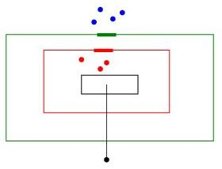
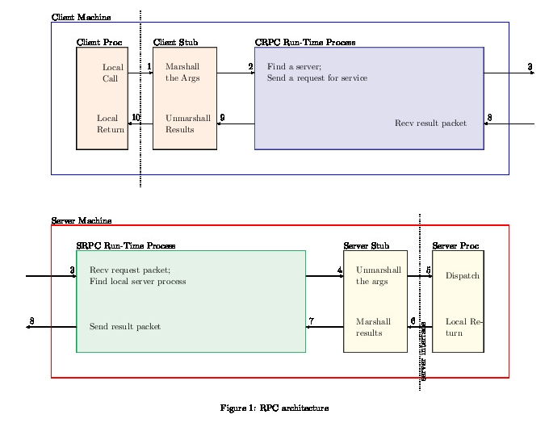
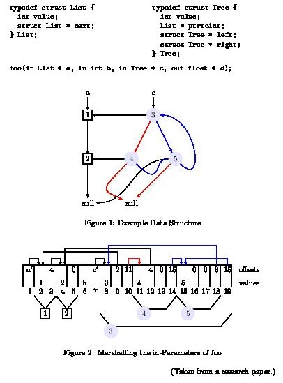
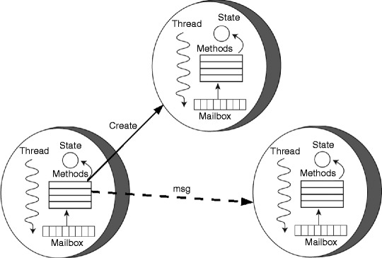
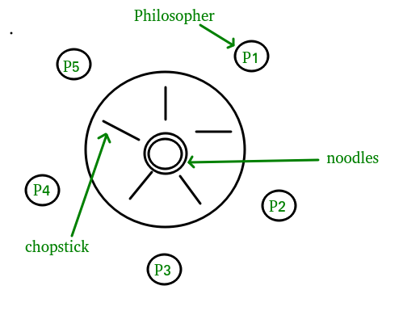

DistrComp Course Overview
Table of Contents
1 Course Home Page
- DIC Course Home Page [Do click this link.]
- Visit this Home Page regularly. Once a day?
2 Syllabus
The next few slides will do:
- Course Description
- Source Materials
- Course Content
2.1 What is Distributed Computing?
- Distributed Computing is coordinated computing using machines at many locations.
- It primarily uses message passing.
- It tries to avoid synchronization.
- It tries to avoid shared variables.
- It tries to be robust in the presence of individual machine failures.
2.2 Detailed content #1
- Semantics of semicolon, parallel-bar, and fat-bar.
- Review of classic problems in concurrency.
- Semaphores: weak and strong, split-binary, distributed.
- Distributed Termination.
- CSP (Communicating Sequential Processes).
- GO Language Systems Programming.
2.3 Detailed content #2
- Distributed Tuple Space and Linda.
- Clients and Servers, RPC, RMI.
- Actors, Scala Akka.
- Distributed file servers. IPFS.
- Semantics of Concurrency. Axiomatic Semantics. Temporal Logic.
- Fairness. Starvation. Mutual exclusion. Deadlocks. Livelocks. Interference.
2.4 Prerequisites
- Undergraduate course on OS Internals and Concurrent Programming
- Fluency in C++ and Java; Fluency in Go is not expected.
- Familiarity with Linux OS and IPC mechanisms.
2.5 Course Objectives
- Understand the technologies of Remote Invocation (RPC, RMI), and Actors in several languages.
- Understand the principles of concurrent, distributed, networked, and parallel computing.
- Understand non-deterministic computations and unfair scheduling as givens.
2.6 Learning Outcomes
- Write client-server programs using RPC in C/C++, RMI in Java, and Channels in Go, and Actors in Scala.
- Use distributed file server technology, e.g., IPFS.
- Reason about programs using assertions and temporal logic.
- Become fluent in Go and Scala.
2.7 Source Materials: Books
- Gregory R. Andrews, Concurrent Programming: Principles and Practice, Benjamin/Cummings, 1991. {A classic. Look for it on EBay? Text Book.} See also his revision of the above book. ./andrews-multithreaded-toc.html [We will do Chapters 1 and 2 much later in our course.]
- Alan A. A. Donovan and Brian W. Kernighan. The Go Programming Language. 201x.
- Andrew S. Tanenbaum and Maaten Van Steen. Distributed Systems: Principles and Paradigms. 201x
2.8 Source Materials: On Line
- Course Home Page All course related announcements will be posted on this page.
- Scala + Akka Documentation, https://doc.akka.io/docs/akka/current/?language=scala
- Java tutorial, https://docs.oracle.com/javase/tutorial/
- https://github.com/theanalyst/awesome-distributed-systems "A curated list to learn about distributed systems."
2.9 Fundamentals (4 lectures)
- Starvation, deadlocks, livelocks. Interference, fairness, safety and liveness properties. Fine-grain and coarse-grain parallelism.
- Review of classic problems in concurrency.
- Proper definition of semaphore. Weak and strong semaphores. Split-binary semaphores.
- Starvation-free mutual exclusion.
- Readers-Writers and the technique of "passing the baton.''
2.9.1 Refs
- Andrews, Chapters 1, 2, 3.1, 3.5, 4, 5, 6, and Section 10.2.
- Jan Tijmen Udding, "Absence of Individual Starvation Using Weak Semaphores,'' Information Processing Letters, Vol. 23, 1986, 159-162.
- Allen B. Downey , "The Little Book of Semaphores", freely downloadable book, 201x, http://www.greenteapress.com/semaphores/
2.10 Remote Invocation (4)
- Remote Procedure Calls (RPC), and Clients and Servers.
- Implementation of RPC. Stub generation, marshaling arbitrary data structures. External data representation (XDR) and RPCGEN. Study of an RPC example.
- Remote Method Invocation (RMI) and Object Serialization of Java.
2.10.1 Refs
- Andrew D. Birrell and Bruce Jay Nelson, Implementing Remote Procedure Calls, ACM Transactions on Computer Systems (TOCS), 2, 1, pp. 39–59, 1984. A classic paper.
- Oracle.com, ONC+ Developer's Guide; http://docs.sun.com/app/docs/doc/816-1435; Reference. This is a highly recommended complete book on RPC.
- https://www.cs.princeton.edu/courses/archive/fall16/cos418/docs/L3-rpc.pdf Slides on Distributed Programming and Remote Procedure Calls (RPC)
- Java tutorial, http://download.oracle.com/javase/tutorial/ Focus on the RMI trail.
- Andrews, Chapter 9.
2.11 Distributed Algorithms (6)
- CSP (Communicating Sequential Processes).
- Asynchronous and synchronous message passing.
- Logical clocks, ordering of events.
- Heartbeat, probe/echo, and broadcast algorithms.
- Distributed Mutual Exclusion.
- Implementation of Distributed Semaphores.
- Distributed Termination Detection.
2.11.1 Refs
- C. A. R. Hoare, "Communicating Sequential Processes,'' Communications of the ACM, 1978, Vol. 21, No. 8, 666-677. http://www.usingcsp.com/ has an entire free book by Hoare describing further developements. Hoare is a Turing Award Winner.
- Andrews, Chapters 7 and 8.
2.12 Distributed Languages and Systems (8)
- SR: Multiple primitives,
- Linda: Distributed data structures, and
- Java, and JavaSpaces,
- Actors + Akka.
- Distributed PLs: Erlang, Go, Scala.
- Distributed File Systems, IPFS
2.12.1 Refs
- Andrews, Chapter 10.
- Sudhir Ahuja, Nicholas Carriero and David Gelernter, "Linda and Friends,'' IEEE Computer (magazine), Vol. 19, No. 8, 26-34. http://www.lindaspaces.com/ has an entire book.
- JavaSpaces http://en.wikipedia.org/wiki/Tuple_space
- GO https://tour.golang.org/concurrency/1 Goroutines and https://tour.golang.org/concurrency/2 Channels
- Books and Docs on Akka
2.13 Semantics of Concurrency (4)
- Programming logic. Axiomatic Semantics.
- Assertions on process states.
- Pre-, post conditions, and loop invariants.
- Temporal logic.
2.13.1 Refs
- Mateti, Lecture Notes on ../FormalMethods/
- Andrews, Chapter 2.
- http://www.tlaplus.net/ TLA "is a logic … that consist[s] mainly of ordinary (non-temporal) mathematics with just a tiny bit of temporal logic." Lamport is a 2013 Turing Award winner.
3 Grading
3.1 Exams 25+35%
- Two exams. Most likely take-home. But, without searching the web or whatever for answers. Honor code expected.
3.2 Discussion Forum 5%
- https://piazza.com/wright/spring2020/ceg7370/home [Will rename soon.]
- Piazza is our discussion platform.
3.3 Projects 35%
- Projects P0 .. P3 5+10+10+10%
- P0 src code bundle is given. Show that you can build and run it.
- P1 in C++, P2 in Java, P3 in Akka. All are extensions of P0.
- Projects [For full details click this link.]
3.4 Home Work 0%
- Homework will be given. But neither collected nor graded. Implies that you will work on various things on your own and discuss.
- Homework for this week, as a sample:
- Learn the Mine Sweeper game. Imagine each cell is a computer system. A cell talks to neighbors only through message passing. How do we program it?
4 Survey of Prerequisites
- We will try to fill you in on most of the prerequisites. The survey is for that purpose. In some ways it may be better that you have not heard of some of these things.
- Post on Piazza as well as interact now to this Survey of Prerequisites.
4.1 Survey: Concepts from Concurrency
- How familiar are you with: critical sections, mutual exclusion, message passing, synchronization, fairness, starvation, non-determinism?
- Can you differentiate deadlocks from livelocks? safety from liveness?
4.2 Survey: Constructs from Concurrent Programming
- How familiar are you with: Critical Regions, Monitors, binary and general Semaphores?
- How familiar are you with IPC mechanisms of Linux?
4.3 Survey: Classic Problems
- How familiar are you with: Producers and Consumers, Readers and Writers, Dining Philosphers, Roll-Your-Own Cigarette Smoking, Sleeping Barber, Drinking Philosophers.
4.4 Survey: Formal Semantics
- How familiar are you with: assertions, pre- post-conditions, loop and class invariants.
- How familiar are you with: Happened Before?
- How familiar are you with: Propositions, Predicates and Temporal Logic?
4.5 Survey: Program Development
- How long is the longest C/C++ program that you have written individually?
- Same question but with Java.
- Same question but with Scala. (Very possible that you have done nothing with this language.)
- How familiar are you with
make, ant, maven, gradle, and various build-tools? - What IDEs have you used and for how long? E.g., idea/ eclipse/ netbeans/ other-IDEs. On Linux? On Windows?
5 Course Lecture Samples
1. We are picky about our terms. Ex: "Process"
- All the following are conceptually the same: process, thread, task, job, …
- On a given platform (e.g., Linux): process v thread v … are different
- By def: a single process is sequential
- Muliprocess v Multiprocessor v Multi-core: Same? Similar?
5.1 Concurrency Fundamentals #1: Non-Determinacy
- Ex: Consider the simple assignment statement
- {x := 3 [] 7} (Note the fat-bar)
- What is the value of x?
- Either 3 or 7; nothing else; but which??
- Code better be prepared for either.
- The above computation P is non-determinant. Each time we run, the result of P may change "for no good reason." Why? Because "non-determinacy" [] is baked in.
5.2 Concurrency Fundamentals #2: Meta Terminology
- Fundamentals v Principles v Foundations
- Concurrency Fundamentals constitute the core of this course.
- Until the last week of this course, we will use concurrency as a term covering all of networked-, parallel-, and distributed- computing.
5.3 Semaphores Defs
- A semaphore s is an OOP ADT (abstract data type) variable. It has an integer private data member s, only operable with two public methods called P and V, apart from being initialized.
- P(s) ≡ ‹ await s > 0 → s := s-1 ›
- V(s) ≡ ‹ s := s+1 ›
- The complications in the defs are (i) the atomic angular-brackets and (ii) the meaning of await.
5.4 Starvation-Free Mutual Exclusion
- {semaphore m := 1; P(m); Process-i; V(m)}
- This is starvation-prone in a distributed context.
- Designing starvation-free solutions is part of this course.
5.5 Starvation-Free MutEx: One Solution Idea

- The dots are processes. The thick-rectangles are gates letting in one process at a time. The black rectangle is where we require starve-free mutex. A process finishing this will exit as the black dot did, skipping over the black-, red- and green boundaries.
- What is the rest of the "idea"?
5.6 Axiomatics #1
- Axiomatics is a way of defining the meaning of PL constructs, in a way much better than English prose.
- Notationally, we use the triplet < P, S, Q > where P and Q are assertions (True/False Boolexp) on process state, S is a piece of code.
- Q describes the state after S completed. It assumes that P was true when code S started.
- P is called a pre-condition. Q is called a post-condition.
5.7 Axiomatics #2
- Here is an example applied to semaphore def.
- P(s) can be defined as follows: Given [(R and s > 0) ⇒ Q(s, s-1)], we can conclude <R, P(s), Q>
- V(s) can be defined as follows: Given [R ⇒ Q(s, s+1), we can conclude <R, V(s), Q>
- There will be considerable discussion on this.
5.8 Project on RPC #1
- RPC Architecture [We will go over this in considerable detail.]

5.9 Project on RPC #2 Marshalling/ Serializing
- How do we send data structures that contain links/addresses to machines across the network?

5.10 Actors
- An actor is an extremely light weight process communicating with other actors through mailboxes. No shared variables.

Figure 4: Carl Hewitt's Actors
5.11 Dining Philosophers in Akka

A problem created to illustrate concurrency issues. In our course, we wish to do this in Scala with Akka actors.
5.12 Distributed File Systems
- DFS: A file volume spatially distributed over many machines.
- Requirements: Transparency, Concurrency, Replication, Heterogeneity, Fault tolerance, Consistency, Security, Efficiency.
- Fault tolerance == Robustness, 24x7: Immune to (individual) machine failures. cf. CAP "theorem".
5.13 IPFS
- Inter Planetary File System [Ha ha! For now, only on earth.]
- https://ipfs.io/ [Do click] "IPFS powers the Distributed Web"
- Involves Blockchain and Filecoin.
- Link to Mateti's lectures ../DistFileSys/IPFS/ [Not expected to click today]
6 References
- I will list specific chapters from Recommended Books later. See also Source Materials #1 Books and Source Materials #2 On Line.
- M. Ben-Ari, Principles of Concurrent and Distributed Programming, Addison-Wesley/Pearson, 2006. {Another classic.}
- George Coulouris, Jean Dollimore, Tim Kindberg, and Gordon Blair, Distributed Systems: Concepts and Design, 2011. {Systems as opposed to principles, and foundations.}
6.1 ACK
- RevealJS: This presentation was made with https://revealjs.com, a FOSS HTML Presentation Framework
- Nearly all figures are borrowed from the web